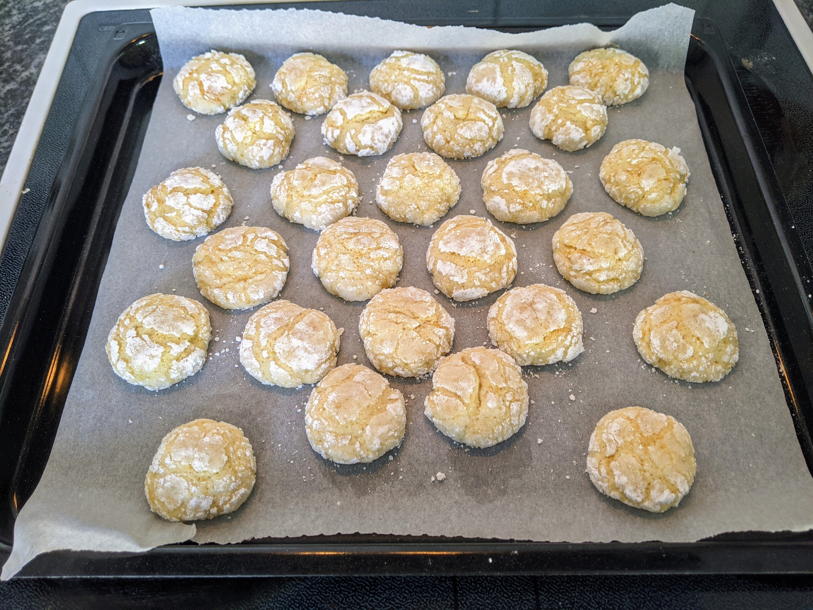

Biscuits craquelés au citron

Pour une quarantaine de biscuits :
- 300g de farine
- 120g de sucre, plus un peu plus pour l'enrobage
- Une demi-cuillère à café de levure chimique
- Un œuf
- 100g de beurre ramolli
- Un citron bio
- Du sucre glace
- Dans un saladier, mélanger le beurre et le sucre jusqu'à ce que ça soit crémeux.
- Laver, zester, et presser le citron. Ajouter zeste et jus dans le saladier, puis l'œuf, la farine, et la levure, en mélangeant bien tout du long (par exemple, au batteur électrique).
- Faire préchauffer le four à 180°C, préparer un bol de sucre et un bol de sucre glace.
- Façonner des petites boules avec la pâte, les aplatir un peu, puis les rouler d'abord dans le sucre, puis dans le sucre glace. Disposer le tout sur une plaque de four recouverte de papier sulfurisé.
- Enfourner 15 minutes environ. Il faut que les biscuits grossissent et craquèlent, sans brunir. Déguster une fois refroidi.
Remarque : on peut aussi ajouter quelques gouttes de colorant alimentaire jaune dans la pâte, si on veut des biscuits jaune vif.
Retour à la liste des recettes